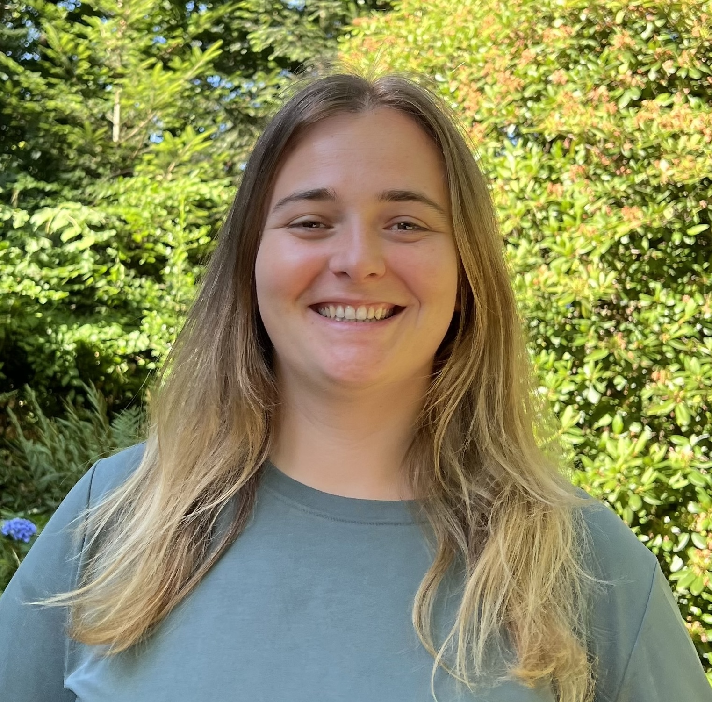

Pourquoi ce sondage?
Dans le cadre de mon mémoire de master à l'Université de Bâle, j'étudie les obstacles que rencontrent les personnes handicapées dans la politique.
Qui peut participer?
- Vous considérez-vous comme une personne handicapée?
- Êtes-vous intéressé·e par la politique?
Si vous répondez oui aux deux questions, vous pouvez participer au sondage.
L'objectif
Nous rassemblons toutes les réponses anonymes dans un rapport. Nous envoyons ce rapport aux partis politiques. Ainsi, les politicien·nes apprendront comment mieux inclure les personnes handicapées.
Comment fonctionne le sondage?
- Le sondage peut être rempli sur ordinateur ou sur téléphone.
- Une connexion internet est nécessaire.
- Il y a environ 25 questions.
- Le sondage dure environ 10 à 20 minutes.
- Il n'y a pas de bonne ou mauvaise réponse.
- Vos réponses sont anonymes. Cela signifie que personne ne peut savoir quelles réponses sont les vôtres.
À propos de moi

Je suis Mirjam Kottmann et j'étudie en master à l'Université de Bâle. Ce sondage fait partie de mon mémoire de master. Le travail est soutenu par Prof. Dr. Stefanie Bailer et Prof. Dr. Lea Portmann.
Contact
Vous avez des questions? Écrivez-moi un e-mail: mirjam.kottmann@stud.unibas.ch